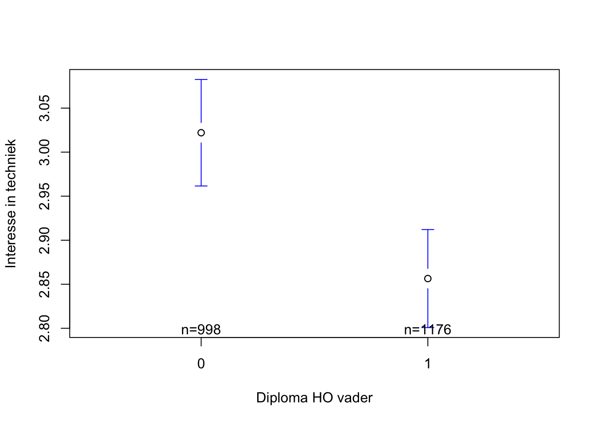
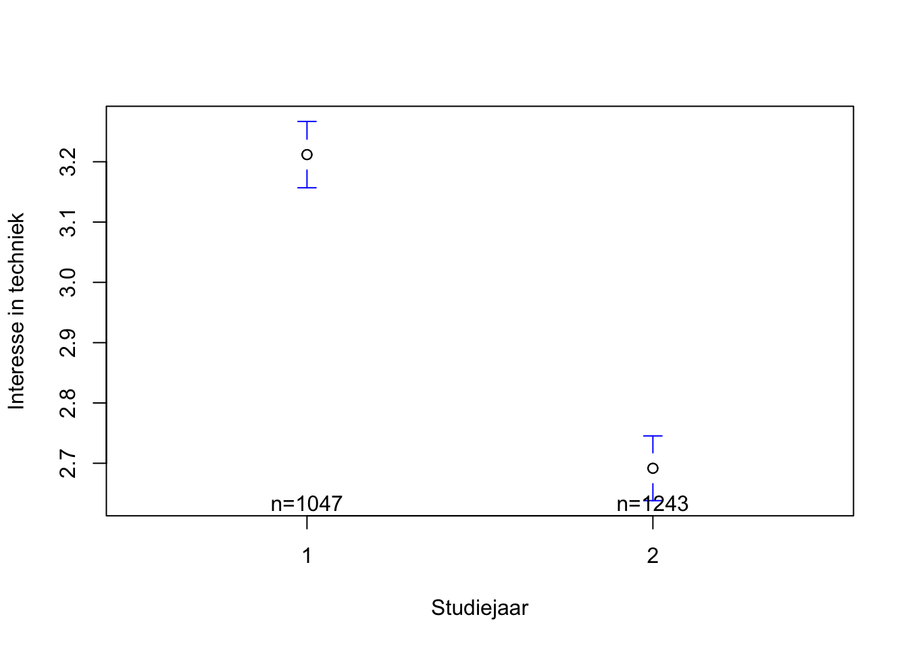
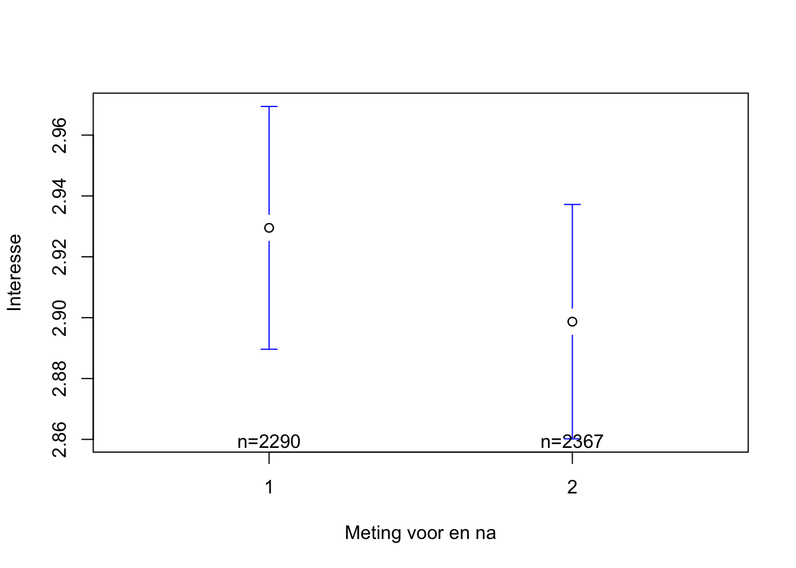

leveneTest(Techniek$Interest.voor, Techniek$Dipvader)Levene's Test for Homogeneity of Variance (center = median)
Df F value Pr(>F)
group 1 0.0614 0.8043
2172 Vooraleer je de oefeningen kan oplossen is het belangrijk om zowel de dataset te laden, het pakket car te activeren en ook de OLP2 Functies te activeren.
Vooraleer we de t-test zelf kunnen uitvoeren dienen we eerst de assumptie van gelijke binnengroepenvarianties na te gaan aan de hand van de Levene Test.
leveneTest(Techniek$Interest.voor, Techniek$Dipvader)Levene's Test for Homogeneity of Variance (center = median)
Df F value Pr(>F)
group 1 0.0614 0.8043
2172 Kijken we naar de p-waarde van deze test dan zien we dat deze hoger is 0.05. Met andere woorden, we kunnen ervan uit gaan dat aan de assumptie van gelijke varianties is voldaan.
Nu zijn we klaar om de t-test zelf uit te voeren.
t.test(Techniek$Interest.voor~Techniek$Dipvader,var.equal=TRUE)
Two Sample t-test
data: Techniek$Interest.voor by Techniek$Dipvader
t = 3.9534, df = 2172, p-value = 7.95e-05
alternative hypothesis: true difference in means between group 0 and group 1 is not equal to 0
95 percent confidence interval:
0.08344689 0.24771611
sample estimates:
mean in group 0 mean in group 1
3.022044 2.856463 We starten met het aflezen van de geobserveerde gemiddelden in de steekproef. De gemiddelde score voor interesse in techniek van de leerlingen in de steekproef wiens vader geen diploma hoger onderwijs heeft (Dipvader heeft de woorde 0, waarvoor je de betekenis kan nagaan in het codeboek) bedraagt 3.02. Dit gemiddelde is lager dan de gemiddelede score voor interesse in techniek van leerlingen in de steekproef van wie de vader wel een diploma hoger onderwijs heeft (Dipvader heeft de woorde 1, waarvoor je de betekenis kan nagaan in het codeboek): 2.86.
Uit de output leren we dat er een statistisch significant effect is van diploma vader op interesse voor statistiek. Dit lezen we af in het stukje p-value = 7.95e-05 wat betekent dat de p-waarde lager is dan 0.05. Dit betekent dat de kans zeer klein is dat we het vastgestelde verschil in onze steekproef zouden waarnemen indien de nulhypothese opgaat. Dat sterkt ons in de conclusie dat er in de populatie wel degelijk een verschil is in interesse voor techniek naargelang diploma van de vader.
Vervolgens gaan we de ook altijd de effecgrootte na. Hier maken we gebruik van Cohen’s d.
d(Techniek$Interest.voor,Techniek$Dipvader)[1] 0.1701453De Cohen’s d is lager dan 0.2. Daarom kunnen we concluderen dat dit een verwaarloosbaar klein effect is.
errorbar(Techniek$Interest.voor~Techniek$Dipvader,
xlab="Diploma HO vader",
ylab="Interesse in techniek")
Opnieuw voeren we eerst de Levene Test uit.
leveneTest(Techniek$Interest.voor, Techniek$Studiejaar)Levene's Test for Homogeneity of Variance (center = median)
Df F value Pr(>F)
group 1 5.5 0.0191 *
2288
---
Signif. codes: 0 '***' 0.001 '**' 0.01 '*' 0.05 '.' 0.1 ' ' 1Ditmaal is de bijhorende p-waarde lager dan 0.05 (zie 0.0191 * in de output). Dit betekent dat de assumptie van gelijke binnengroepenvarianties niet opgaat. Bijgevolg moeten we hiermee expliciet rekening houden bij het uitvoeren van de t-test in R door het argument var.equal=FALSE toe te voegen bij het opvragen van de t-test.
t.test(Techniek$Interest.voor~Techniek$Studiejaar,var.equal=FALSE)
Welch Two Sample t-test
data: Techniek$Interest.voor by Techniek$Studiejaar
t = 13.277, df = 2260.6, p-value < 2.2e-16
alternative hypothesis: true difference in means between group 1 and group 2 is not equal to 0
95 percent confidence interval:
0.4433075 0.5969520
sample estimates:
mean in group 1 mean in group 2
3.211843 2.691714 We lezen eerst de geobserveerde gemiddelden in de steekproef af in de output. Het gemiddelde voor de eerste groep (Studiejaar = leerjaar 1) bedraag 3.21 wat hoger is dan het gemiddelde voor de tweede groep (Studiejaar = leerjaar 2) (gemiddelde = 2.69).
Dit verschil in interesse voor techniek tussen beide groepen leerlingen is bovendien statistisch significant. De p-waarde in de output is lager dan 0.05 (zie p-value < 2.2e-16 in de output). We concluderen dat er in de populatie ook een verschil in interesse voor techniek zal zijn tussen leerlingen van wie de vader geen diploma hoger onderwijs heeft en leerlingen van wie de vader wel een diploma hoger onderwijs heeft.
Vervolgens gaan we opnieuw de effectgrootte na aan de hand van Cohen’s d.
d(Techniek$Interest.voor,Techniek$Studiejaar)[1] 0.5557404De Cohen’s d voor dit effect van Studiejaar op interesse voor techniek valt tussen 0.5 en 0.7: het gaat om een medium effect.
errorbar(Techniek$Interest.voor~Techniek$Studiejaar,
xlab="Studiejaar",
ylab="Interesse in techniek")
Deze derde oefening verschilt van de eerste twee oefeningen. Bij de eerste twee oefeningen deden we een independent samples t-test omdat we de gemiddelde scores van twee verschillende groepen leerlingen wensten te vergelijken met elkaar. Bij deze oefening vergelijken we twee gemiddeldes die gemeten zijn bij dezelfde groep leerlingen. Daarom maken we in deze oefening gebruik van een paired samples t-test .
Om deze paired samples t-test uit te voeren maken we gebruik van het argument paired = TRUE in de t.test() functie.
t.test(Techniek$Interest.voor,Techniek$Interest.na, paired=TRUE)
Paired t-test
data: Techniek$Interest.voor and Techniek$Interest.na
t = 1.9696, df = 2289, p-value = 0.049
alternative hypothesis: true mean difference is not equal to 0
95 percent confidence interval:
0.000149209 0.067973062
sample estimates:
mean difference
0.03406114 Het verschil in gemiddelden voor interesse in techniek tussen het begin en het einde van het trimester bedraagt 0.03.
We lezen af dat de p-waarde lager is dan 0.05 (zie p-value = 0.049). De kans om het verschil in gemiddelen in onze steekproef vast te stellen indien de nulhypothese opgaat is kleiner dan 5%. Dit sterkt ons om te concluderen dat er in de populatie WEL een verschil is in interesse in techniek tussen het begin en het einde van het trimester.
Vervolgens berekenen we de Cohen’s d aan de hand van de functie dpaired(). Hierbij moeten we de t-waarde en het aantal vrijheidsgraden ingeven die we bekwamen bij de t-test (zie hierboven).
dpaired(1.9696,2290)[1] 0.04115857Cohen’s d is lager dan 0.2: het gaat om een verwaarloosbaar effect.
errorbar2(Techniek$Interest.voor,Techniek$Interest.na,
xlab="Meting voor en na",
ylab="Interesse")